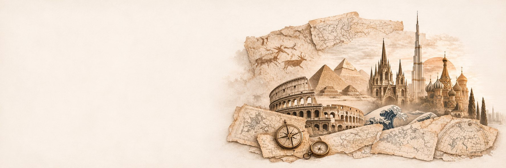
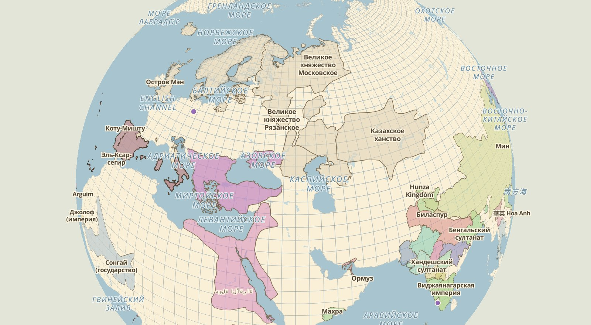
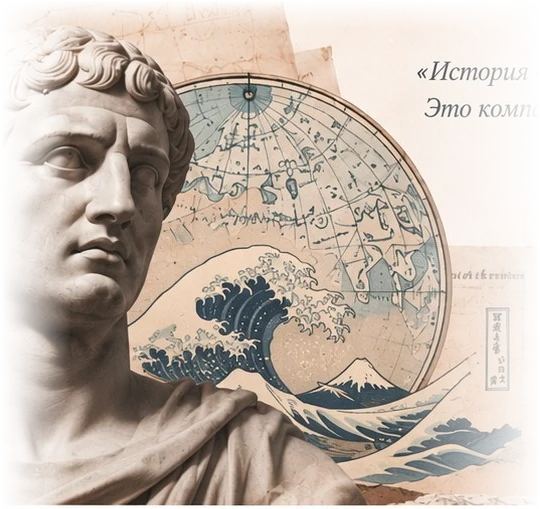

Больше
чем история
Исследуйте эпохи, страны и судьбы людей. Интерактивные карты, хронология событий и тысячи проверенных материалов для тех, кто хочет понимать прошлое и лучше видеть будущее.
-
Проверенные
источники* -
Интерактивные
материалы -
Для учеников,
студентов и всех любознательных**
Интерактивная карта мира
Границы государств, народы и культуры на любой год — от 4000 г. до н.э. до 2000 г. н.э.

Данные карты © OpenHistoricalMap · Natural Earth · © OpenStreetMap contributors
- 1288 государств и культур
- 9 регионов · 45 дорожек
- синхронологическая таблица

Знать прошлое — значит
строить более осознанное будущее.